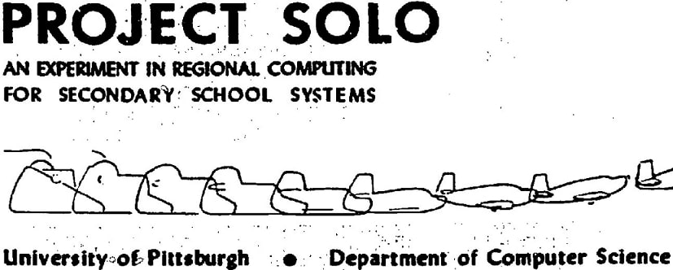
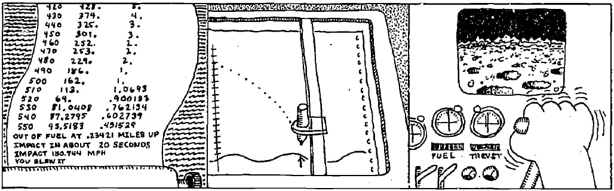
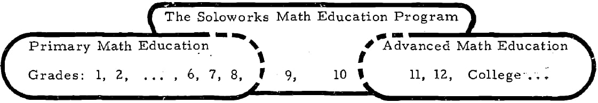

A Solo Approach to People's Computing
An initiative and experimental program called Project Solo (sometimes written as "SOLO"), launched in 1970 by Thomas Dwyer, involved a collective effort over time around "researching and testing the potential of computers for the range of subjects found in large urban school systems."
This project, one of the many aligned with educational computing, also provides an exciting start to a history that focuses on a path from mathematical games to topographical navigation games to adventure games.
Starting Project Solo

Project Solo was initially formed as part of the Special Interest Group on Computer Uses in Education (SIGCUE) within the Association for Computing Machinery (ACM).
SIGCUE was an offshoot of the Special Interest Group on Computer Science Education (SIGCSE), founded in 1969. You can read a history post about the organization as well as read some of the founding documents.
Dwyer published the inception document for the project in the society's newsletter Interface (Volume 4, Issue 1) in February 1970. You can see this full document as "Project Solo: A Statement of Position Regarding CAI and Creativity", where "CAI" refers to "Computer-Assisted Instruction." A core part of the project's focus is stated right at the document's start.
Primary emphasis is being placed on the importance of each student as a creative person who can learn to use the computer as an exploratory tool.
A bit later, in issue 23 of the project's newsletter from November 1972, the project's description resurfaced concisely.
Project Solo is an experimental program concerned with exploring the potential of computers in the hands of high school teachers and students. The project tested its ideas during 1970-72 in three large public schools in Pittsburgh where several hundred students learned to use computers in "solo" mode.
That last bit of wording is important. Dwyer characterized educational programming as having two modes: dual and solo. The "Project Solo" name was meant to reference the transition of a pilot learning to fly, going from "dual flying" with an instructor to "solo flying" alone. However, as the inception document states:
It is important to notice that SOLO implies more than "student alone." It means that the student must make his way on his own, but within a highly structured, well-prepared environment.
In Dwyer's scheme, the computer would serve as the enabling "system" that allowed a "solo mode" to occur. Here, the student would not be working with the guided attention of a teacher ("dual mode") but instead exploring on their own in the context of a constrained system.
I strongly encourage reading this brief inception document. It sheds light on the initial goals set by educators and underscores the regrettable distance we've traveled from those aspirations.
At the end of 1973, Project Solo transformed and reemerged as Solo Works (sometimes written as 'Soloworks'). The new project, officially titled "A Computer-Based High School Mathematics Laboratory,' described itself in the previously mentioned issue 23 as follows:
Soloworks is officially a project to develop new approaches to high school mathematics education.
In that same issue, the project further elucidates its objectives with the following description:
'Soloworks' is also a statement of philosophy, affirming our belief that any student can be brought into the world of solo-mode learning by an intelligent use of technology.
The project focus ultimately saw a future where it could augment the computing world by considering different interfaces.

One such idea, as shown in the above visual, was that of a lunar lander that might present an actual visual user interface but, behind the scenes, is driven by a series of mathematical calculations. The mathematical underpinning of this was still quite crucial. The project now focused on the "critical transitional period in math education."

Skipping ahead even further, issue 26 of the newsletter, from April 1974, reprinted an article called "Heuristic Strategies for Using Computers to Enrich Education." This article also appeared in the International Journal for Man-Machine Studies. This article summarizes a lot of Project Solo as it led into Solo Works, and, in particular, there's a focus on how "certain aspects of computing are directly related to a deep view of education."
The idea of "student-controlled computing" was, I believe, a significant influence on the concept of "people's computing," even though such a term was not necessarily in use at the time.
Preliminaries to Project Solo
I ended the last section with a paper from near the end of the project's historical focus. Let's consider a few sources showing how all this evolved from its earliest days after its inception.
Project Solo: Paper 1
The first paper we can consider is another by Thomas Dwyer. Keep in mind our chronology here as we're stepping back in time. The paper I'm referring to follows from Dwyer's 1970 inception document. The paper in question was called "Some Principles for the Human Use of Computers in Education," first published in early 1970 (ERIC Source).
The version I link to here is a reprint of that paper from the International Journal of Man-Machine Studies (volume 3, issue 3), published in July of 1971.
In this paper, Dwyer reinforces the dual/solo modes of interaction:
While it is clear that dual instruction involving close guidance by a teacher is essential (one does not recommend that a student immediately go out in an airplane and "do his own thing"), it is equally clear that the student will optimise his benefits from the dual mode if he knows he is preparing for a solo flight. He knows, in fact, that he can eventually exert more influence on his learning than his instructor.
I think that a significant point from this paper is the following:
One of the most interesting uses of computers we have employed in our high school work involves the creation of tutorial, review, gaming and simulation programs by students (not teachers) for the improvement and individualization of various courses.
The emphasis there is mine. The idea of games and simulations was important as it was a way to engage students. In fact, in issue 8 of the newsletter, from January 1971, we can see an example of how learning-as-a-game occurred.
Further, in issue 22 of the newsletter, from June 1972, we read the following:
Distinctions can be made between games and simulations, although the programs students write in these areas often combine both concepts. The real fun begins when students modify, or better yet create the programs behind simulations and games. For this reason, we believe that listings of such programs should always be furnished to students.
Thus, you have to imagine a whole generation of young people growing up, encountering the idea that computers could engage them in something enjoyable or, at the very least, interesting.
The paper notes, "the student's work along these lines can very well be superior to the teacher-constructed programs." Indeed, you can imagine that was the case with the games and simulations as students learned to stretch their imaginations.
Project Solo: Paper 2
Another paper, following the above, was "Teacher-Student Authored CAI Using the NEWBASIC/CATALYST System", published in early 1970 (ERIC Source). This paper was reprinted in the Communications of the ACM (volume 15, issue 1) published in January of 1972.
This paper puts a particular emphasis on the "solo mode" that gave the project its name:
We would classify the writing, debugging, and revision of an original BASIC program by a student as SOLO mode, since the programs with which he interacts (e.g. the BASIC compiler and library routines) are not pedagogically intended. We also consider a student who authors a CAI program such as a simulation or a tutorial to be in SOLO mode.
What's quite clear here is not just the emphasis on BASIC, which any history of people's computing must involve quite a bit, but also this focus on students interacting with existing programs and — crucially! — with students creating their own programs. The paper reflects this aspect as well:
After working with another person's tutorial or simulation (preferably his own teacher's), the student wants to know how it worked. It has become clear to us that this question should always be answerable, and within the context of the same system that generated the initial curiosity.
This statement says students will want to take apart those BASIC programs to understand how they work. Indeed, in the context of gaming and simulation history, this is exactly how variations on game ideas and concepts proliferated. If you could take apart something and see how it worked, it would be a short step to see how to create own your particular variation.
It's interesting to note that there was concern about this approach in one context. In issue 19 of the Project Solo newsletter (from October 1971), we read:
The basic approach of Project Solo has been to emphasize the use of computers as tools which support both teacher and student in their learning activity. It has been our experience, however, that the truly inquisitive mind always wants to know about the tool as well as its use. When the tool is something as complex as a computer, the answers to such questions cannot be given in a few words.
This statement indicates that the students will want to learn as much about how the computer works, and thus more broadly about computing in general, than just how to create a program that can run on the computer. Yet, a previous issue — specifically, issue 11 (from February 1971) — framed the problem differently:
Our recent experience indicates that there is a lot of potential for getting youngsters in the 9th, 8th, (or sometimes 7th) grade excited about exploring the world of learning with computers. The potential is magnified several times when the student controls the full power of the computer; when it is used by him, not on him. This means that we must provide the opportunity for these students to master control of the machine at an early age.
The idea behind this statement was the intersection of education and computing. And, as we've seen, games and simulations were a vital enabler of that for many students.
Project Solo: Paper 3
A final paper worth considering is "Primer for the NEWBASIC/CATALYST System," published in October 1970 (ERIC Source). This paper delves into the interaction with the system implemented in Project Solo. This context provides a technical understanding of how educators implemented the ideas outlined in the previous two papers, offering immense historical value.